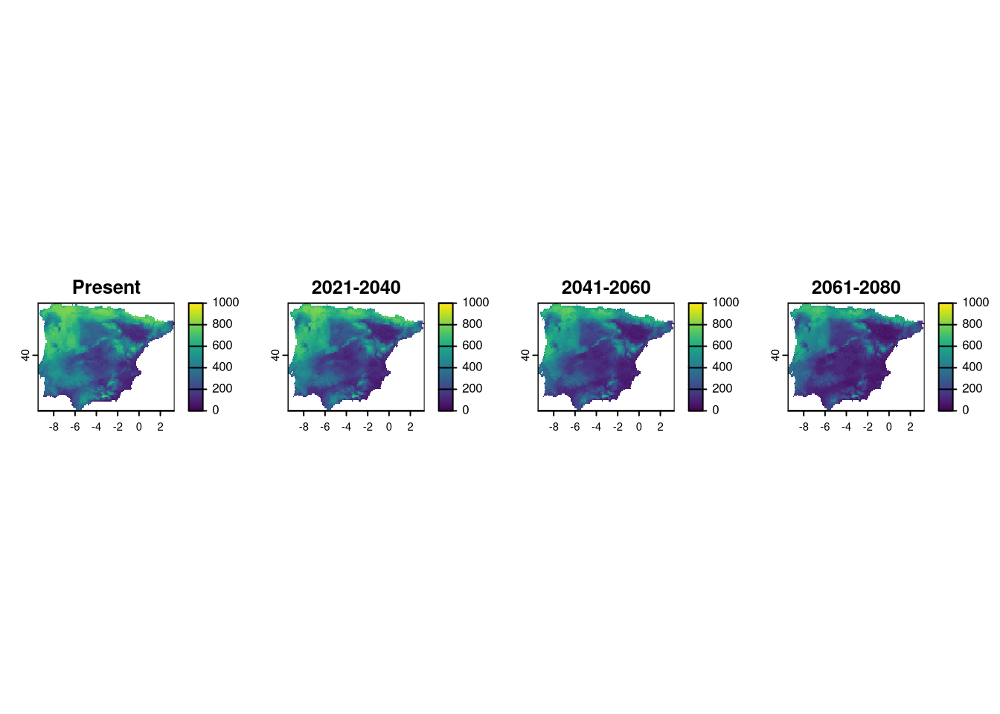

10 Chapter 8 - Model projections
In this chapter, we are going to use the ensemble models to project onto our region of interest, which is the Iberian Peninsula. Additionally, we have multiple ages and SSPs to project. By the end of this chapter, we will have projections for
- Current conditions
- Period 2011-2040
- SSP 126
- SSP 585
- Period 2041-2060
- SSP 126
- SSP 485
- Period 2061-2080
- SSP 126
- SSP 586
This results in 7 model projections for the Iberian Peninsula.
We need both terra library for opening the varaibles, and biomod2 for interpreting the models.
We can define here some variables that will be useful for looping over ages and SSPs (similar to Chapter 5) to read and project models to different time periods.”
Again, we will proceed with the first species and then run the same code for the other two to obtain all projections.
We can open the raster for the current period variables as this will be constant for all current projections.
10.1 Projecting Vipera aspis models
WE use the same trick as in the previous chapter to open the ensembled model available in the models/Vaspis folder:
Until now, we have been focusing in the continuous probability predictions. However, models can be converted to binary (presence vs. absence) by setting a threshold that results in best performance. We can check which threshold biomod2 is using for these models.
## full.name merged.by.PA
## 1 Vaspis_EMmedianByTSS_mergedData_mergedRun_mergedAlgo mergedData
## 2 Vaspis_EMmedianByTSS_mergedData_mergedRun_mergedAlgo mergedData
## 3 Vaspis_EMmedianByROC_mergedData_mergedRun_mergedAlgo mergedData
## 4 Vaspis_EMmedianByROC_mergedData_mergedRun_mergedAlgo mergedData
## merged.by.run merged.by.algo filtered.by algo metric.eval cutoff
## 1 mergedRun mergedAlgo TSS EMmedian TSS 510.0
## 2 mergedRun mergedAlgo TSS EMmedian ROC 510.5
## 3 mergedRun mergedAlgo ROC EMmedian TSS 510.0
## 4 mergedRun mergedAlgo ROC EMmedian ROC 510.5
## sensitivity specificity calibration validation evaluation
## 1 69.793 69.125 0.391 NA NA
## 2 69.551 69.519 0.738 NA NA
## 3 69.793 69.125 0.391 NA NA
## 4 69.551 69.519 0.738 NA NADepending on the metric, the threshold varies as it has to maximize the performance of each metric separately. For TSS, the threshold (cutoff) is set to 0.474, and for ROC, it is set to 0.468. Note that biomod2 multiplies the probabilities by 1000, so they range between 0 and 1000.
We can project the model to current conditions in the Iberian Peninsula. The function will create both continuous predictions and binary predictions using the thresholds mentioned above. It is important to name the projections appropriately for easy identification of the rasters. We set the proj.name to Current and a new folder named proj_Current will be created inside models/Vaspis. In this folder, two rasters will be saved for continuous and binary predictions. Also, the argument new.env refers to the new environmental conditions that are the raster variables we want to project to.
vaProj <- BIOMOD_EnsembleForecasting(bm.em = vaEnsbl,
proj.name = 'Current',
new.env = curp,
models.chosen = 'all',
metric.binary = 'TSS')We will have to do the same for each combination of age and SSP projections. For that, we use a nested for loop as before (chapter 5). The logic is as follows:
- For each combination of age and ssp
- Construct the respective filename using age and SSP and open the raster.
- Project the ensembled model to the respective time period, correctly naming the projection with
age_ssp.
for (age in ages) {
for (ssp in ssps) {
projVars <- rast(paste0("data/rasters/proj_", age, "_", ssp, ".tif"))
vaProj <- BIOMOD_EnsembleForecasting(bm.em = vaEnsbl,
proj.name = paste0(age, "_", ssp),
new.env = projVars,
models.chosen = 'all',
metric.binary = 'TSS')
}
}At this stage, we should have a folder inside models/Vaspis for each projection that we built. We now need to run the code for the other two species to complete all projections.
10.2 Projecting Vipera latastei models
We load the Vipera latastei ensembled model and run the code.
vlName <- load("models/Vlatastei/Vlatastei.EcoMod.ensemble.models.out")
vlEnsbl <- eval(str2lang(vlName))
get_evaluations(vlEnsbl)
# Project to current time
vlProj <- BIOMOD_EnsembleForecasting(bm.em = vlEnsbl,
proj.name = 'Current',
new.env = curp,
models.chosen = 'all',
metric.binary = 'TSS')
# Project to future periods
for (age in ages) {
for (ssp in ssps) {
projVars <- rast(paste0("data/rasters/proj_", age, "_", ssp, ".tif"))
vlProj <- BIOMOD_EnsembleForecasting(bm.em = vlEnsbl,
proj.name = paste0(age, "_", ssp),
new.env = projVars,
models.chosen = 'all',
metric.binary = 'TSS')
}
}10.3 Projecting Vipera latastei models
Nowe for Vipera seoanei.
vsName <- load("models/Vseoanei/Vseoanei.EcoMod.ensemble.models.out")
vsEnsbl <- eval(str2lang(vsName))
get_evaluations(vsEnsbl)
# Project to current time
vsProj <- BIOMOD_EnsembleForecasting(bm.em = vsEnsbl,
proj.name = 'Current',
new.env = curp,
models.chosen = 'all',
metric.binary = 'TSS')
# Project for future
for (age in ages) {
for (ssp in ssps) {
projVars <- rast(paste0("data/rasters/proj_", age, "_", ssp, ".tif"))
vsProj <- BIOMOD_EnsembleForecasting(bm.em = vsEnsbl,
proj.name = paste0(age, "_", ssp),
new.env = projVars,
models.chosen = 'all',
metric.binary = 'TSS')
}
}10.4 Final considerations for projections
At this point, we have all the projections needed to answer our initial question. By defining a smaller projection zone (the Iberian Peninsula) relevant to our research question, we have optimized both computer storage and processing time, as we avoid unnecessary projections over a larger area.
All files are saved in respective folders and we can access them using any GIS. As an example, here are the model projections for Vipera aspis for the current and future periods, only for scenario ssp 585.
p1 <- rast("models/Vaspis/proj_Current/proj_Current_Vaspis_ensemble.tif")
p2 <- rast("models/Vaspis/proj_2021-2040_585/proj_2021-2040_585_Vaspis_ensemble.tif")
p3 <- rast("models/Vaspis/proj_2041-2060_585/proj_2041-2060_585_Vaspis_ensemble.tif")
p4 <- rast("models/Vaspis/proj_2061-2080_585/proj_2061-2080_585_Vaspis_ensemble.tif")
layout(matrix(1:4, 1))
plot(p1[[1]], main="Present", range=c(0,1000))
plot(p2[[1]], main="2021-2040", range=c(0,1000))
plot(p3[[1]], main="2041-2060", range=c(0,1000))
plot(p4[[1]], main="2061-2080", range=c(0,1000))